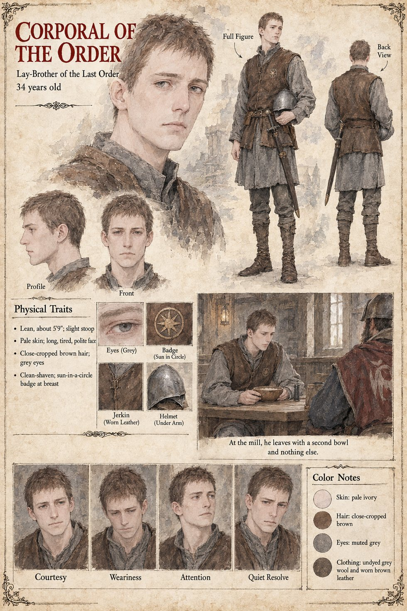

Corporal of the Order
Corporal of the Last Order's lay-brothers, in grey · unnamed · 34 years old by his sheet
He arrives an hour after the sergeant, by the other road, on the same errand, and Ermengarda sets him at the opposite end of the same bench, with the kettle between them, on the single principle that a house which fed one altar's soldiers and not the other's would shortly be a house that had chosen, and that nobody had asked her to. It is an older law than the Accord, the manuscript says, and it holds in that kitchen for fifteen months, as the oldest laws hold, because no one can remember who drafted it. He is the Last Order's side of it, a corporal in grey.
A month after the sergeant, he comes for the stranger on the same errand; the levy has come for him twice that winter, and the stranger keeps a vow of no steel in that house. The manuscript has the corporal go away with the same nothing and a second bowl of porridge. Nothing in it identifies him further. The sheet's thirty-four years, lean five-foot-nine frame with the stoop of long marches, long tired polite face, pale skin, close-cropped brown hair, grey eyes, clean-shaven jaw, sun-in-a-circle badge at the breast, undyed grey wool tunic and worn leather jerkin are its own, and so is its note that he is a lay-brother. The sergeant of the levy sits at the other end of the bench.